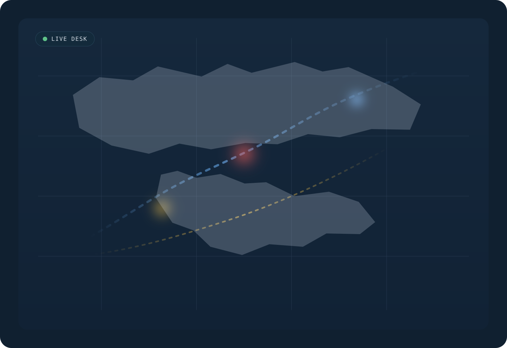
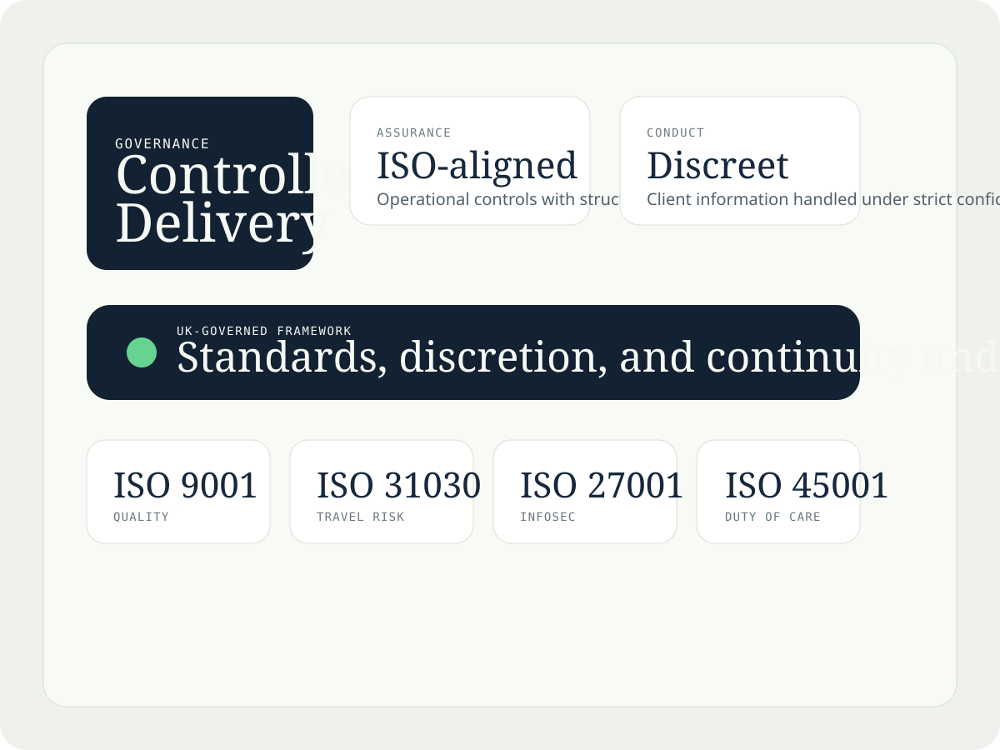
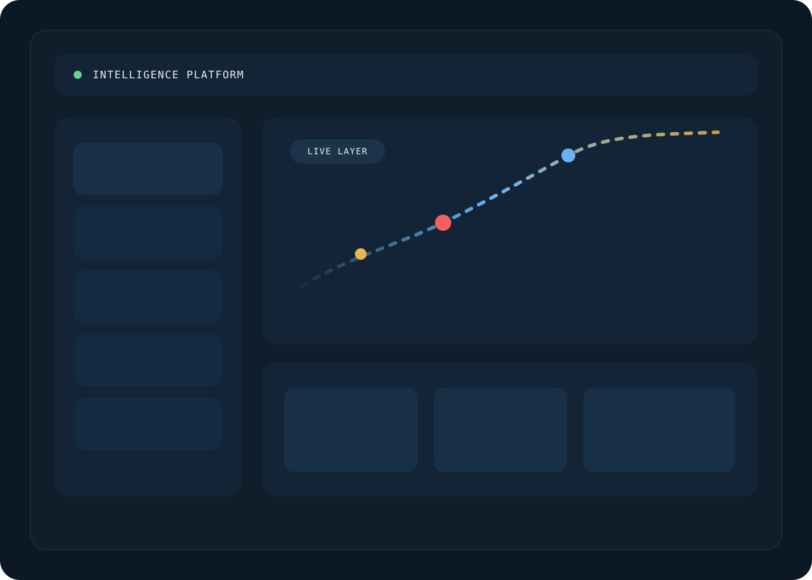
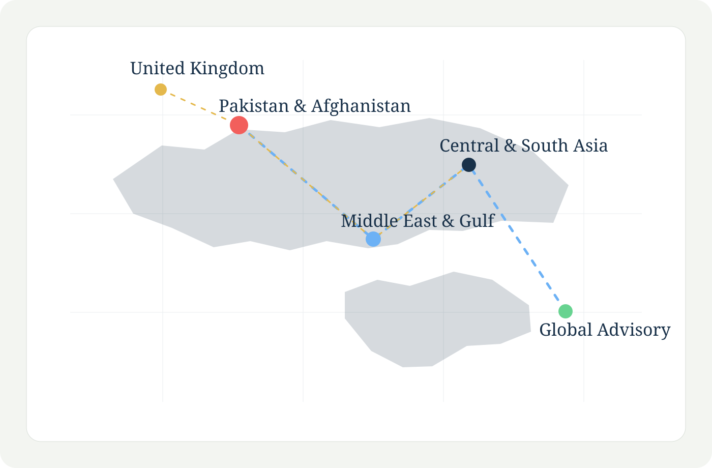

Live Intelligence.
Structured for Decisions.
A live monitoring surface showing how Securide24 frames exposure, movement impact, and escalation without forcing leadership teams to read raw noise.

Islamabad corridor movement affected by active civil unrest
Primary route posture changed after protest escalation near the diplomatic corridor. Executive movement should shift to alternate access with buffer timing increased.
Arterial route disruption likely within two hours.
Infrastructure watch active. No confirmed impact to executive travel posture.
Checkpoint activity intensified on northern approach corridor.
What We
Deliver
Five capability pillars built for decision-quality outcomes, not generic advisory.

Risk Intelligence & Monitoring
Continuous monitoring translated into calibrated alerts and country-level risk outputs executives can act on.
Explore capability
Executive Mobility & Secure Travel
Route assessment, in-country monitoring, and live advisory for executive travel through elevated-risk environments.
Explore capability
Executive Protection Coordination
Discreet protection planning and vetted coordination across South Asia, Central Asia, and the Middle East.
Explore capability
Crisis Response & Incident Coordination
Structured crisis coordination, extraction support, and real-time advisory when incidents escalate.
Explore capability
Strategic Risk Advisory
Board and executive advisory covering country entry, threat posture, and sustained exposure in complex environments.
Explore capabilityAssurance.
Standards.
Conduct.
UK-governed conduct, aligned standards, and strict discretion form the trust framework behind every advisory engagement.

The Securide24
Intelligence Platform
A productised intelligence environment combining live signals, structured briefings, and country posture for organisations that need more than occasional consultation.
Live monitoring, alert logic, country analysis, and executive briefings working as one intelligence-led operating system.

Pakistan's major urban centres remain elevated following sustained political mobilisation. Executive movement in and around Islamabad requires advance route intelligence for the current operating cycle.
Real-time monitoring integrated into the platform experience.
Executive Signals
High-relevance alerts for principals and leadership teams managing exposure in motion.
Active Alerts
Open-source and location-based watch logic separated from noise and framed for action.
Country Risk Briefs
Country posture briefs for pre-travel review, market engagement, or principal movement.
Crisis Flash Updates
Fast-turn leadership updates explaining what changed and what decisions follow.
How Securide24
Works
Anticipate
Monitor emerging signals before they become incidents.
Monitor
Maintain live watch across priority regions.
Assess
Convert signals into structured risk judgment.
Advise
Deliver clear guidance to principals and security leads.
Secure
Activate route, protection, and pre-deployment support.
Respond
Coordinate incidents as situations evolve rapidly.
Recover
Reset posture and update the next operating baseline.
Operational
Reach
Explore where Securide24 holds regional depth and how each footprint is framed for executive use.

Pakistan & Afghanistan
Deep operational network. Senior regional advisory. Active monitoring.
- Ground-informed context for movement and exposure.
- Active watch logic around Islamabad and Lahore corridors.
- Leadership-grade advisory presentation for complex visits.
Decisions Made.
Risks Mitigated.
Executive-facing outcomes showing what changed, how the response was structured, and what decision quality was delivered.
Route Intelligence Prevented Exposure During Active Civil Unrest
A principal movement through Islamabad was rerouted before protest escalation closed primary arterials.
Structured Evacuation Advisory During Rapidly Evolving Situation
When a client's team was stranded during a security deterioration, Securide24 coordinated a structured extraction window.
Country Entry Assessment Reshaped Investment Exposure Decision
A pre-entry risk assessment materially changed a board's exposure decision before operational resources were committed.
Practitioner-Grade
Leadership
Leadership presented with calm authority and delivery credibility clear at a glance.


Latest from
the Platform
Open-source analysis, regional risk commentary, and operational guidance presented more like briefing output than a standard blog grid.
Operate With
Intelligence.
Whether you require monitoring access, a pre-deployment assessment, or a strategic advisory engagement, the team will respond within one operational day.
All enquiries are strictly confidential — UK governed — discreet response guaranteed